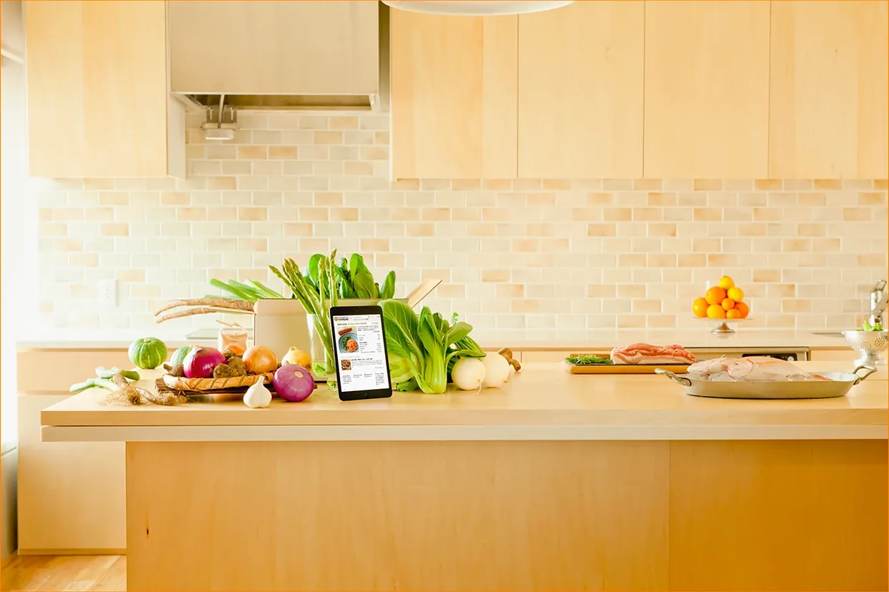
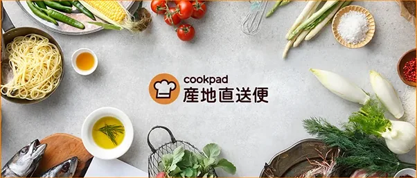
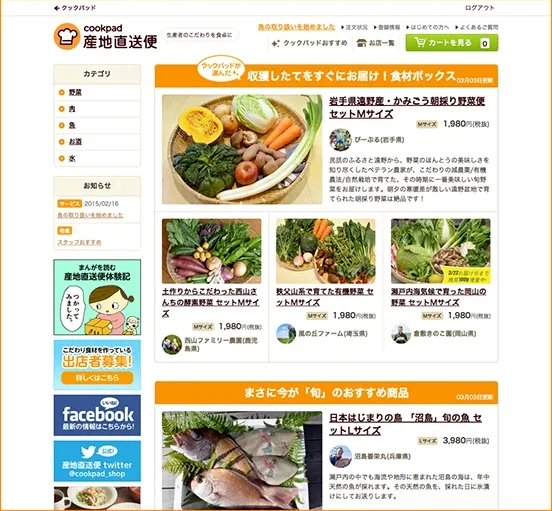
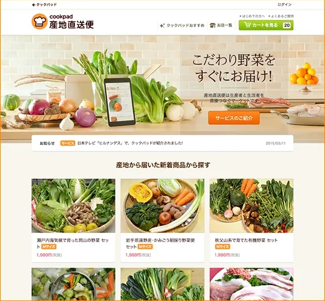

CASE 04 · 2014 – 2015
Cookpad
産地直送便
「注文までが分かりにくい」という声に、画面の数ではなく「一目で分かる」ビジュアルで応えた。
Users said ordering was confusing. I answered with visuals that explain the service at a glance instead of adding screens.
"주문하기가 어렵다"는 목소리에, 화면을 늘리는 대신 "한눈에 이해되는" 비주얼로 답했습니다.






- 01問題定義Problem문제정의
旬の野菜や産地の食材を届けるEC。ユーザーから「注文までの流れが難しい」という声が続いていました。
An e-commerce service delivering seasonal produce straight from farms. Users kept saying the path to ordering felt difficult.
제철 채소와 산지의 식재료를 집까지 보내주는 EC 서비스. 사용자들 사이에서 "주문하는 과정이 어렵다"는 의견이 꾸준히 나오고 있었습니다.
- 02リサーチResearch리서치
- チームに届いていたユーザーの声を整理し、つまずく場所を特定。
- アクセス解析で、どの画面で離脱が多いかを確認した。
- 「産地直送」という価値が、最初の画面で伝わっていないことが分かった。
- Sorted the user feedback the team had collected to find where people got stuck.
- Checked analytics to find the pages with the most drop-off.
- Found that the value of "direct from the farm" wasn't coming through on the first screen.
- 팀에 쌓여 있던 사용자 의견을 정리해, 사람들이 어디서 막히는지를 찾아냈다.
- 접속 데이터를 분석해 이탈이 많은 화면을 확인했다.
- "산지 직송"이라는 가치가 첫 화면에서 제대로 전달되지 않는다는 걸 알게 됐다.
- 03制約Constraints제약조건
- Cookpadの中の一事業で、少人数チーム。
- 既存のシステム環境を維持したまま、新しい画面を提示しなければならなかった。
- 生鮮食品は「誰が、どこで」の信頼がないと買われない。
- A small team running one business inside Cookpad.
- We had to keep the existing system and still present a new set of screens.
- People don't buy fresh food without trusting who grew it and where.
- Cookpad 안에서 운영되는 하나의 사업으로, 팀 규모가 작았다.
- 기존 시스템 환경을 유지하면서도 새로운 화면을 제시해야만 했다.
- 신선식품은 "누가, 어디서 키웠는지" 믿을 수 있어야 팔린다.
- 04決定Decision결정
「サービスが一目で分かる」ビジュアルを最優先にする
Put "understand the service at a glance" visuals first
"서비스가 한눈에 이해되는" 비주얼을 가장 먼저 챙긴다
注文が難しく感じる原因は、手順の多さだけでなく「何を買っているのか分からない」ことにもありました。産地や旬の意味、信頼性が伝わって初めて、手順が短く感じられます。
Ordering felt hard because of the steps and because people weren't sure what they were buying. Once the origin, the season and the trust came through, the same steps felt shorter.
단계가 많은 것 말고도, "내가 뭘 사는 건지 잘 모르겠다"는 점이 주문을 어렵게 느끼게 했습니다. 산지와 제철이 주는 의미, 그리고 믿음이 먼저 전해지면 같은 단계도 훨씬 짧게 느껴집니다.
全体の流れを整理し、サイト全体のスタイルを統一する
Reorganize the whole flow and unify the site's styling
주문 흐름 전체를 다시 짜고, 사이트 전체의 스타일을 하나로 맞춘다
部分的な修正を重ねるより、流れ全体を見直したほうが「分かりにくさ」の原因を一度に取り除けると考えました。
I judged that reviewing the whole flow, rather than patching pages one by one, would remove the confusion at its source.
한 곳씩 고쳐 나가기보다 흐름 전체를 다시 봐야 "어렵다"는 느낌의 원인을 한 번에 걷어낼 수 있다고 판단했습니다.
- 05改善Iteration개선
リニューアル後、PVが増え、離脱率が下がりました。
その後このサービスは、Cookpadが生鮮食品事業に乗り出すうえで貴重なPoCとなり、現在のさまざまなオフライン事業の展開にも活かされています。
After the renewal, page views went up and the bounce rate went down.
The service later became a valuable proof of concept for Cookpad's fresh food business, and its lessons carried into the many offline businesses Cookpad runs today.
리뉴얼 후 페이지뷰는 늘고 이탈률은 줄었습니다.
이후 이 서비스는 Cookpad가 신선식품 사업에 나서는 데 귀중한 PoC 경험이 되었고 지금의 다양한 오프라인 사업 전개에도 밑거름이 되었습니다.